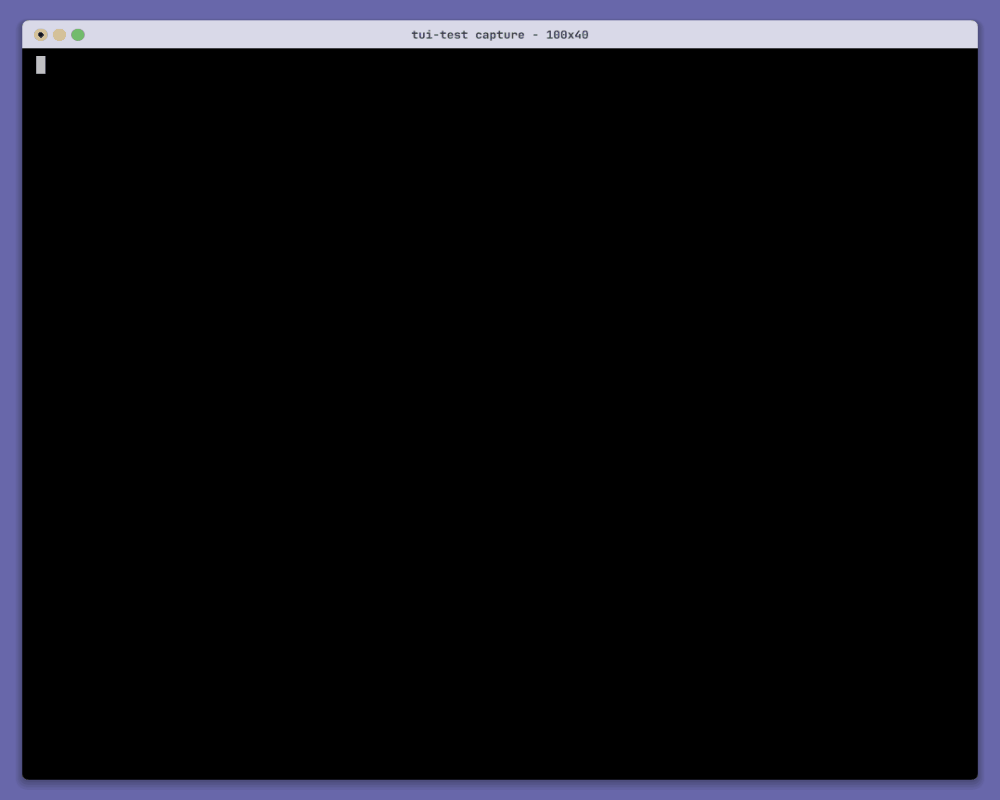

Fast start
Guided or one-liner
Interactive TUI for humans. Flags and S3_* env vars for Supervisor, cron, and CI.
Guided TUI for MinIO, RustFS, AWS S3, and compatible endpoints. Validate credentials first, pick buckets, then download folders or optional ZIP archives.
Quick start
npx --yes github:AlmossaidLLC/s3-backpack-cli

Verify access before anything downloads. Select buckets once. Leave with local folders, and ZIP files only if you ask for them.
Fast start
Interactive TUI for humans. Flags and S3_* env vars for Supervisor, cron, and CI.
Safe by design
Connection and credentials are checked before download paths or archives are requested.
Multi-bucket
Checkbox selection in the TUI, or --buckets / --all-buckets in headless mode.
Portable output
Mirrored buckets land locally. Timestamped ZIP archives are opt-in, not required.
Connect
Endpoint, access key, secret key, TLS, path style, and signature.
Verify
Credentials are checked before any output path is asked.
Output
Choose a download directory. ZIP is optional, then a path if you want archives.
Select buckets
Pick one or many from a checklist. Space toggles, Enter starts.
Backup
Each bucket is mirrored locally, then zipped only if you opted in.
| Provider | Path style | API signature |
|---|---|---|
| MinIO | auto | S3v4 |
| RustFS | auto | S3v4 |
| AWS S3 | auto | S3v4 |
| Legacy S3 | on | S3v2 |
Self-signed certificates: enable insecure TLS. Flags and env vars: see CLI.md.
No install required. npx fetches and launches the latest version from GitHub.